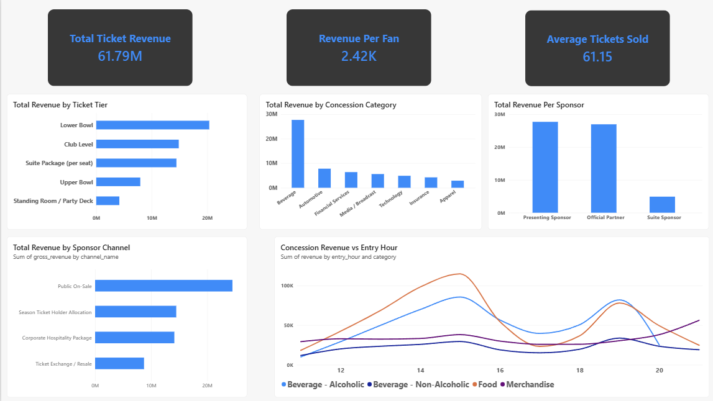
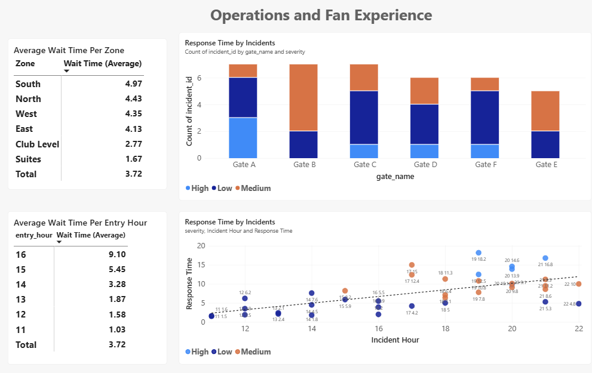
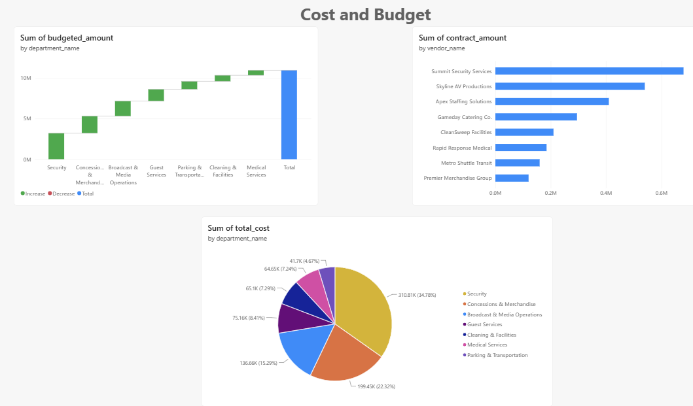

🏈 Super Bowl Operations Analysis
A synthetic star-schema database (8 dimension tables, 6 fact tables) modeling a Super Bowl's event operations — ticket sales, sponsorship revenue, gate entry & concessions, security incidents, staffing costs, and department budgets — built in SQL Server and queried in T-SQL. The panels below are a Chart.js recreation of the Power BI dashboards built on top of it.
Ticket & Sponsorship Revenue
Ticket sales across four channels and five seating tiers, plus sponsorship revenue recognized across the deal timeline for seven partners.
Total Revenue by Ticket Tier
Total Revenue by Concession Category
Total Revenue Per Sponsor
Total Revenue by Sponsor Channel
Concession Revenue vs Entry Hour
Operations and Fan Experience
Gate wait times by zone and hour, plus every security incident logged during the event, broken out by gate and severity.
Average Wait Time Per Zone
| Zone | Wait Time (Average) |
|---|
Response Time by Incidents
Average Wait Time Per Entry Hour
| Entry Hour | Wait Time (Average) |
|---|
Response Time by Incidents
Cost and Budget
Department operating budgets rolled up from category line items, vendor contract sizes, and where actual staffing spend goes by department.
Sum of budgeted_amount
Sum of contract_amount
Sum of total_cost
The Original Power BI Reports
The panels above are a from-scratch Chart.js recreation, built directly off the same schema rather than a screenshot — here are the actual Power BI dashboards they're modeled on.


